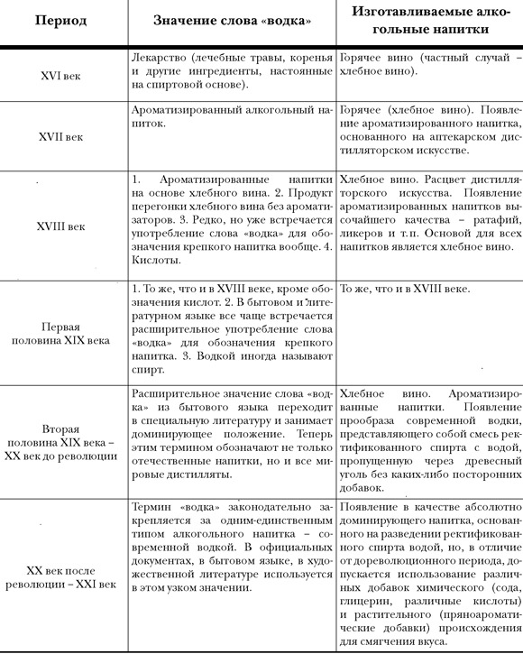

«Водка». Слово-хамелеон

Что же это, в сущности, такое?
Собственно говоря, само по себе слово «водка» нас интересует лишь постольку, поскольку авторы наших дней, пишущие на водочную тему, называют им, как правило, и современный продукт, и домонопольное хлебное вино. Термин этот с одинаковой свободой применяется к совершенно разным напиткам. В результате в восприятии читателей возникает серьезная путаница. Возьмем для примера цитату все из того же Вильяма Васильевича Похлебкина.
«По своей чистоте водка, производимая в отдельных аристократических хозяйствах русских магнатов — князей Шереметевых, Куракиных, графов Румянцевых и Разумовских, имела такой высокий стандарт качества, что затмевала даже знаменитые французские коньяки. Вот почему Екатерина II не стеснялась преподносить такую водку в подарок не только коронованным особам вроде Фридриха II Великого и Густава III Шведского, не говоря уже о мелких итальянских и германских государях, но и посылала ее как изысканный и экзотический напиток даже такому человеку, как Вольтер, хорошо знавшему толк во французских винах, нисколько не опасаясь стать жертвой его убийственного сарказма. Но не только Вольтер получил этот ценный подарок в тогдашнем ученом мире, но и такие корифеи всемирной науки и литературы, как швед Карл Линней, немец Иммануил Кант, швейцарец Иоганн Каспар Лафатер, великий поэт и государственный деятель Иоганн Вольфганг Гете и многие другие.
Не случайно поэтому ботаник и химик Карл Линней, опробовав водку, был столь вдохновлен ею, что написал целый трактат „Водка в руках философа, врача и простолюдина. Сочинение, прелюбопытное и для всякого полезное“, где дал широкую и объективную общественную, медицинскую, хозяйственную и нравственную оценку этого продукта» [390]
Как всегда у В. В. Похлебкина — никаких ссылок. То есть: знаю, но откуда — не скажу… Или не знаю, но придумаю. Тем не менее все это прочно внедрилось в мифологию: нет ни одной книги о водке, не упомянувшей факт дарения Екатериной напитка, «затмевающего французские коньяки», высоким зарубежным особам. Какое же впечатление остается от подобных текстов у читателя? А такое, что наша родная привычная водка, то есть смесь спирта-ректификата с водой, пропущенная через активированный уголь (никакой другой водки читатель, как правило, не знает), которую Екатерина Великая рассылала направо и налево по всей Европе, производила фурор среди коронованных особ и великих ученых. Однако давайте все же зададимся вопросом, откуда у «русских магнатов — князей Шереметевых, Куракиных, графов Румянцевых и Разумовских» взялись ректификационные колонны, которые в то время были еще не изобретены? Так что если Екатерина что и рассылала, то это были ароматизироваанные «водочные изделия», изготовленные на основе хлебного вина, которые и именовались в ту пору водками — то есть напитки, принципиально отличающиеся от современной водки. Это раз.
И второе. Когда мы встречаем у иностранных авторов XVII–XIX веков слово «водка», надо отдавать себе отчет, что в оригинале почти наверняка стоит другое слово, а это резко меняет восприятие текста.
Рассмотрим это на примере с тем же Линнеем. По В. В. Похлебкину выходит, что, получив в подарок от Екатерины водку, Карл Линней, никогда не имевший дело с этим экзотическим напитком, столь возбудился, что разразился весьма пространным трудом. Правильно? А теперь — в библиотеку, в библиотеку… Там мы довольно быстро выясним, что никакой «водки» в работе Линнея нет и в помине. В оригинале стоит «спирт» (Spiritus frumenti quem praeside…). Да и Россия там не упоминается ни явно, ни скрытно. Работа посвящена напиткам-дистиллятам: их истории, действию на человеческий организм и повсеместному распространению в Европе. Существуют два перевода XVIII в. — П. И. Богдановича и Петера Бергиуса. В одном случае «spiritus» переведен как «водка» (Богданович),[391] в другом — «хлебное вино» (Бергиус).[392]
Чтобы развеять все сомнения насчет «Водки в руках…», приведем две коротеньких цитаты (в переводе Бергиуса):
«Когда в целой Швеции около ста тысяч деревень считается, из коих в каждой бочки три (хлеба) ежегодно на курение вина исходит: то сие все до трех сот тысяч червонцев составит, которая сумма немалое богатству учинила приращение»
«Как в Англии в 1736-м году вино сие запрещено было, такое в Лондоне в народе произошло возмущение, что принуждено было ввести в город солдат по укрощению сего бунта»
А про Россию, повторимся, в этой работе Карла Линнея нет ни слова.
В. В. Похлебкин, скорее всего, пал жертвой неточного перевода П. И. Богдановича, и прочитал он, видимо, только название труда в библиотечном каталоге, не удосужившись познакомиться с самим трудом. В противном случае утверждение В. В. Похлебкина о том, что труд Карла Линнея посвящен русской водке, выглядит сознательной профанацией.
Вот она, великая сила слова. Прочитав в заголовке слово «водка», даже ученый В. В. Похлебкин не удержался от соблазна посчитать труд Линнея посвященным русской водке. А как иначе, — раз водка, — значит, русская, другой-то в то время не было. Что же говорить о менее просвещенных читателях.
Во избежание подобных недоразумений постараемся бегло, не вдаваясь в подробности, перечислить основные версии происхождения слова «водка», а главное, попробуем разобраться в значениях, которое оно принимало в языке в разные периоды.
Этимология этого слова на первый взгляд представляется очевидной: «водка» — производное от «вода».
В. В. Похлебкин, задачей которого было во что бы то ни стало доказать, что «слово „водка“ свойственно только русскому языку и является коренным русским словом», утверждает абсолютно категорично:
«Сам по себе факт, что название „водки“ — напитка произошло от слова „вода“ и, следовательно, каким-то образом связано по смыслу или содержанию с „водой“, не вызывает никакого сомнения» [393]
Другими словами, то, что «водка» есть производное от «воды», принимается автором за аксиому:
«Водка. Древнерусский уменьшительный падеж (деминутив) от слова вода, образованное по типу репа — репка, душа — душка, вода — водка» [394]
Однако другой автор — В. Е. Моисеенко, приведший упомянутую цитату из «Кулинарного словаря» В. В. Похлебкина в своей статье «Ещё раз об истории слова „водка“», категорически с таким подходом не согласен:
«…подобная дефиниция не выдерживает лингвистически корректной критики. Безусловно, лексема водка может обладать и уменьшительным значением, точнее сопровождаться экспрессией ласкательности, например, в форме водочка. Эти семантические особенности приобретаются вполне традиционным способом деривации, но не от корня вод, — а от осложнённой первоначально суффиксом — к- формы вод-к (а), т. е.: вод-к (а)/вод-очк (а) (фонематически.[к] 1.[а1чк]). Перед.[к] беглая.[a1+ч] действительно создают деминутивность. По законам русского словообразования уменьшительная форма от вод-а — вод (и) — чк (а), а от вод-к (а) — вод (о) — чк (а), которые оформлены разными гласными и и о. В словаре В. Даля встречаем даже деминутивную форму от водка — водонька. Очевидно, что водка образована не по модели репа — репка, душа — душка» [395]
Другими словами, автор-лингвист утверждает, что в русском языке слова «вода» и «водка» имеют разные корни. В одном случае «вод», в другом — «водк», что, с его точки зрения, находит подтверждение в морфологии, т. е. в анализе способов построения слов, содержащих либо один, либо другой корень.
Еще один популярный вариант чисто русского происхождения слова предложен проф. П. Я. Черных, который высказал предположение, что
«…слово водка по происхождению есть производное не от вода.[… м. б., странное значение „уменьшительности“ здесь вторичное?!], а от водить, вести (ср. проводка, сводка и т. д.)» [396]
В то же время теория П. Я. Черных внутренне противоречива, так как далее следует такое рассуждение: «Однако водка уже в XVII в. стало связываться с водой и получило значение „хлебное вино“ (м. б., по его прозрачности, бесцветности?). Возможно, что известную роль сыграла при этом и латинское aqua vitae — фигуральное наименование (буквально „вода жизни“) крепкого алкогольного напитка»[397]
Словом, лингвист хоть и является сторонником исконно русского происхождения слова «водка», некоторые несостыковки им ясно ощущаются — отсюда обилие предположений, например «м. б., странное значение „уменьшительности“ здесь вторичное?!».
Так же выводит «водку» от глагола «водить» и Борис Синюков, автор статьи «Русь, водка, гои и изгои»[398]
«Мне не очень нравится слово водка, и не потому, что она наше всероссийское горе, это само собой, а потому, что она сразу же ассоциируется с водой, а ассоциироваться они не должны. Вода — это чистота в нашем русском представлении, где такое ее изобилие. А водка — это грязь как в моем, так и в народном, надеюсь, представлении. Она хороша только пока пьяный, и когда выпить хочется. В остальное время она нечисть. Чистота и нечисть соседствовать не могут.»
Так откуда же произошло это слово?. …Осталось опять обратиться к Далю:
«Водить, вести или весть, водка (женск.), водь (муж.), вождь, водец, водца, водырь. Водило, на чем водят зверя, цепь, привязь, повод. Водкий — приживчивый. Водко — плавно, непорывисто». И немного ниже: «Водла — важность, водлый — важный».
«Я сразу же подумал, как же я не догадался раньше? Как же сам Владимир Иванович не догадался и отправил водку черт знает куда? Я ведь прекрасно знаю, что в России и ныне-то нет дорог, потому что они искони передвигались по рекам, по пляжам, бурлаки от этого пошли. Я прекрасно знаю, что историки врут, когда говорят, что были какие-то передвижения поперек рек, только волоки от реки к реке — Ламский, вологодский (волок, волока, волога, волочага, волокнистый, володка и еще целая куча слов). Поэтому не водка питьевая произошла от воды, а водка в смысле водец, водырь, водило, проводка, показывание пути — произошли от воды. А куда же ведет водка, которую пьют? Известно, куда, к послушанию, ибо больше не дадут, если будешь себя вести (опять водка) плохо» [399]
Вместе с тем существуют версии, в соответствии с которыми слово «водка» является заимствованием. Так, уже упомянутый В. Е. Моисеенко утверждает следующее:
«Среди современных славистов бытует мнение о том, что не русское слово водка, а польское wodka представляет собой сохранившуюся до наших дней „усечённую“ первую часть дословного переложения латинского aquavitae. ( Напомним, что aquavitae в дословном переводе означает „вода жизни“. — Прим. авт. ). Будучи фактологически корректным, оно не вызывает возражения, как не вызывают принципиальных возражений и утверждения некоторых исследователей о том, что именно польское слово wodka представляет собой не только первичную „усечённую“ кальку лат. aquavitae, но также является непосредственным образцом прямого лексического заимствования, проявившего себя на русской почве в форме водка» [400]
И там же:
«При более детальном рассмотрении оказывается, что русское по всем своим формальным показателям слово „водка“ с трудом вписывается в формальную сетку современной русской словообразовательной семантики, в которой для этого слова ещё нужно подыскать „нишу“, соответствующую его формальной структуре и семантической природе. Это — рудиментарное свидетельство того, что водка является очень давним заимствованием из хотя и генетически родственного, славянского, но всё-таки иноязычного источника».
Существуют и «политизированные» варианты версии заимствования. В частности, минский журналист и издатель Вадим Ростов (Доружинский), ярый пропагандист «особого исторического пути Белоруссии», утверждает, что слово «водка» вообще не славянского происхождения, а родиной его является ВКЛ — Великое Княжество Литовское. Вот вам пример его логики:
«Что касается происхождения слова „водка“, то Похлебкин пишет: „От XV века у нас нет ни одного памятника, где бы упомянуто слово „водка“ в понятии близком к алкоголю…“ К этому времени понятие „водка“ как алкогольный напиток уже существует в ВКЛ и начинает распространяться в Польше (где до этого использовался термин „gorzalka“, что второе название водки как „горилки“). Новгородцы явно переняли термин у ВКЛ, ибо водку еще считали просто спиртовой настойкой для медицинских нужд, когда у нас в ВКЛ она изначально означала именно алкогольный напиток. Кстати, тот факт, что термин „водка“ поляки переняли у ВКЛ, в Польше, конечно, тоже прячут: мол, сами в Польше изобрели название. Я, однако, полагаю, что слово „водка“ в принципе не могло появиться в языках московитов и поляков, а также украинцев (и вообще тогда славяноязычных народов), ибо там это слово с уменьшительным суффиксом „к“ означало пренебрежительно ту же самую воду — и существовало в их языках. А вот у нас в Литве (Центральной и Западной Беларуси) как раз в этот период XV–XVI веков происходила славянизация литвинов — западных балтов ятвягов, дайнова, мазуров, пруссов и прочих тут живших и ныне являющих собой три четверти этноса белорусов. Язык западных балтов (в отличие от языка восточных балтов жемойтов, аукштайтов и латышей) был очень похож на славянский (ибо славяне и произошли от западных балтов). Но в этом языке не было суффикса „к“ как означающего пренебрежение. Конечно, проследить само словообразование тут крайне трудно (ибо наш язык западных балтов исчез, почти не оставив следов), но факт в том, что слово „водка“ было у соседей давно занято другим содержанием» [401]
Разумеется, в отличие от серьезных теорий Черных и Моисеенко, здесь мы имеем дело с откровенной журналистской профанацией. Язвительно критикуя (и зачастую правильно) В. В. Похлебкина за слабость доказательств, Вадим Ростов (Доружинский) своих доказательств не приводит вообще, например, голословно утверждая, что к XV веку «понятие „водка“ как алкогольный напиток уже существует в ВКЛ». В то же время этот материал дает вполне наглядное представление о том, на каком уровне порой ведутся дискуссии вокруг слова «водка».
Вышеприведенными версиями далеко не исчерпывается весь список. Достаточно в поисковике компьютера набрать словосочетание «происхождение слова водка», и вы окунетесь в бурлящий мир неиссякаемых фантазий. Характерная особенность — на всех форумах специалисты-лингвисты, так же как вышеупомянутый В. Е. Моисеенко, практически единодушно отвергают происхождение слова «водка» от «воды» на основании каких-то только им понятных правил образования слов в русском языке.
Вместе с тем не удается найти ни одной теории, которая объясняла бы еще одну интересную особенность. В русских документальных источниках не единожды зафиксировано написание слова «водка» через «т» — «вотка», а не через «д». Например,
«Вотка липова цвету (1633 г.), вотки цвету из василкового. — Изволишь чарку вотки(?) — Вотку неуживаю» [402]
В своем походном журнале сподвижник Петра I фельдмаршал Б. П. Шереметев часто писал «кушали вотку». Очень похоже, что в те времена такое написание через «т» было довольно распространенно. В серьезной, вызывающей доверие и уважение книге И. Курукина и Е. Никулиной «Повседневная жизнь русского кабака от Ивана Грозного до Бориса Ельцина»[403] приводится свидетельство современника о любимой царем австерии, где он появлялся
«с знатными персонами и министрами пред обедом на чарку вотки».
Но, может быть, мы имеем дело с обычными грамматическими ошибками? Однако как тогда быть с Указом Елизаветы 1751 года —
«Указ ея императорского величества самодержецы всероссийской ис провительствующего сената камор коллегии по указу ея императорского величества правительствующий сенат слушав оной коллегии доношение приказали помещиком и вотчинником про домовые их расходы вотку в уездах в селех в селцах и деревнях при помещиковых дворах где для винного их курения с платежом в казну поведёрных денег для курения простаго вина на домовые их расходы и для подряду и поставки на кабаки кубы и казаны с платежом по ведер денег заклемены и простое вино курить им дозволено» [404]
В грамотности царских писарей сомневаться не приходится.
Поэтому любая гипотеза происхождения слова «водка» должна учитывать и этот факт употребления буквы «т» вместо «д». Но в этом случае написание слова «вотка» через «т» опровергает его происхождение от «вода», так же как и «водить» нисколько не менее, чем любые лингвистические анализы.
Пожалуй, наименее непротиворечивая версия принадлежит непрофессионалу — театральному режиссеру Андрею Россинскому. Суть ее такова. Всеми, в том числе В. В. Похлебкиным, признано, что первоначально слово «водка» обозначало лекарственные препараты на основе горячего (хлебного) вина. Образоваться оно вполне могло следующим образом: аптекари, вполне естественно, могли использовать латинское «aqua vitae», то есть «аквавита», а так как это все-таки были лекарства и объем их был невелик, в народной речи это вполне могло принять уменьшительную форму «аквавитка». Со временем в русском языке «аквавитка» могла вполне естественно трансформироваться сначала в «витку», а затем и в «вотку». (Здесь, пожалуй, единственное слабое место в предложенной логической цепочке, поскольку непонятно, насколько правила и традиции формировавшегося в то время русского языка позволяли такую трансформацию. Так что в этом вопросе слово за профессионалами — лингвистами.) Поскольку в разговорном языке буквы «т» и «д» перед согласной «к» на слух воспринимаются практически одинаково, то долгое время при написании этого слова различные «писари» писали его по-разному в зависимости от того, как «слышали». (Кстати, если бы это слово однозначно ассоциировалось с водой, то такой разноголосицы в написании быть не могло. Никогда слово «вода» не писалось через «т» — «вота».) Со временем, где-то уже во второй половине XVII века, общепринятым стало написание через «д».
Кстати сказать, в соответствии с этой теорией русское «водка» образовалось от латинского «aqua vitae», как и многие названия напитков-дистиллятов в других языках, такие как британское «whisky», американское «whiskey», польское «wodka» и «okowitka», датская «akvavit», то есть вполне укладывается в общую схему.
Из приведенного обзора, как представляется, становится ясно, что неразрывная связь названия «водки» — напитка со словом «вода» «не вызывает никакого сомнения» только у самого В. В. Похлебкина.
А теперь представим себе, что В. В. Похлебкин ошибался. В этом случае рушится все его строение, возведенное на убеждении, что отличительной особенностью русского винокурения была его неразрывная связь с водой.
Но, как мы видим, хотя теория В. В. Похлебкина не может считаться хоть в какой-то степени доказанной, но и железобетонного опровержения, похоже, не существует.
Тем не менее мы вынуждены констатировать: никакой более-менее установленной этимологии слова «водка» — увы! — не существует. Впрочем, для нас это и не суть важно. Гораздо существеннее разобраться в том, какие же значения приобретало это слово в разные исторические периоды.
У В. В. Похлебкина в «Истории водки» существует целая глава под названием: «Возникновение термина „водка“ и его развитие с XVI по XX век».
То, как бытовало слово в языке с момента своего появления до второй половины двадцатого века, он излагает вполне точно и на этот раз исторически корректно:
«1. XV век. От XV века у нас нет ни одного памятника, где бы упомянуто слово „водка“ в понятии, близком к алкоголю.
2. XVI век. В XVI веке под 1533 годом в новгородской летописи слово „водка“ упомянуто для обозначения лекарства: „Водки нарядити и в рану пусти и выжимати“, „вели государь мне дать для моей головной болезни из своей государской оптеки водок… свороборинной, финиколевой“.
3. XVII век. Уже в середине XVII века встречаются письменные документы, где слово „водка“ употреблено для обозначения напитка. Так, в челобитной архимандрита Варфоломея от 1666 года читаем: „А старец Ефрем… ныне живёт в келье, а то питьё, вино и водку привозили дети его тайно“.
4. XVIII век. В XVIII веке слово „водка“ впервые употреблено в официальном языке, но не как основное, полноправное, а как второй синоним. Особенно часто термин „водка“ употребляют во второй половине XVIII века, но и в этих случаях, когда дело касается официальных актов, справочников, словарей, к слову „водка“, помещаемому без всяких пояснений, всегда следует отсылка: смотри „вино“. И именно под этим всё ещё официальным термином водку и рассматривают. Но водками без всяких оговорок в XVIII веке называют лишь те водки, которым приданы дополнительные вкус, аромат (запах) или цвет, то есть всё то, что передвоено вместе с растительными травными, ягодными, фруктовыми и даже древесными добавками, то, что приобрело от этих добавок вкус, запах или только цвет. Поскольку для получения такого продукта всегда необходимо передваивание, то часто для краткости этот вид водок называли также двоенными водками либо обозначали вид этих двоенных водок — анисовая, тминная, померанцевая, перцовая и т. д. Все эти водки были прямыми наследницами лекарственных водок XVI–XVII веков и точно копировали, повторяли их по своей технологии. Единственное различие их состояло в том, что их сдабривали не лекарственными, а пищевыми или вкусовыми компонентами. Но это было различие не по существу, а лишь по форме» [405]
(Заметим в скобках, что и в этом случае В. В. Похлебкин, будучи прав по сути, в деталях допускает досадные неточности, путая понятия «перегонка» и «передваивание», а также «двоеный» и «двойной». Впрочем, в данном контексте это непринципиально, тем более что мы уже на этом достаточно подробно останавливались в первой главе.)
Если во всем, что касается значения слова «водка», включая XVIII век, В. В. Похлебкин весьма убедителен, то применительно к XIX веку его рассуждения теряют стройность. Единственное, что можно отметить в его выводах, так это то, что
«к 70-м годам XIX века начинается медленное вытеснение словом „водка“ в бытовом языке прежнего понятия „вина“ как „хлебного вина“».
Ниже станет ясно, что в последующих XIX и XX веках трансформация слова «водка» на этом не закончилась. Но и XVIII век не ограничился вышеприведенными значениями этого термина. Во-первых, имеются свидетельства, что водками в то время называли и кислоты. В своей книге «Первые основания металлургии, или рудных дел» Ломоносов подробно описывал способ получения и очистки «крепкой водки», как в то время называли азотную кислоту употреблявшуюся в «пробирном» деле.[406]
Неким отзвуком тех времен может служить сохранившееся до сих пор известное каждому школьнику название смеси концентрированных кислот — «царская водка». Во-вторых, похоже, что водкой уже начинают называть не только ароматизированные напитки, но и напитки, ранее называемые вином. В отчете об экспедиции Беринга приводится письмо капитана Алексея Чирикова, содержащее интересный рассказ о несчастьях, перенесенных им в море на одном из русских судов.
Обращают на себя внимание следующие строки:
«…понеже нам не на чем стало обстоятельство земли разведывать и к пропитанию своему в прибавок получать водки…» [407]
Трудно себе представить, что моряки получали «к пропитанию своему» элитные в то время ароматизированные водки.
Эта тенденция продолжилась и в XIX веке. Например, у М. Ю. Лермонтова читаем:
«Осетины шумно обступили меня и требовали на водку; но штабс-капитан так грозно на них прикрикнул, что они вмиг разбежались.
Ведь этакий народ! — сказал он, — и хлеба по-русски назвать не умеют, а выучил: „Офицер, дай на водку!“ Уж татары по мне лучше: те хоть непьющие …» [408]
И наконец, в-третьих, водка стала использоваться в качестве синонима спирта.
«Несколько сих животных, мною во спирте сохраняемых, были предназначены, чтоб в последствии времени дополнить то, чего я описать не мог. Но долговременное в водке пребывание и с места на место перемещения так испортили все утробные части, что они равномерно соделались мягкими, багровыми и изнуренными» [409]
Этот перевод сочинения господина Сонниния был сделан Г. А. Голициным в 1803 году, но, скорее всего, не ему принадлежит авторство смешения понятий спирта и водки. Переводчик просто пользовался терминологией, сформировавшейся в предыдущем столетии.
Но дополнения, сделанные к «Похлебкинской хронологии», носят лишь уточняющий характер и в соответствии с известным высказыванием «тенденции важнее фактов» практически не влияют на сложившуюся в то время терминологию.
В основном под водкой понимались напитки, полученные из хлебного вина дополнительной перегонкой с добавлением пряноароматического сырья или без него. Сахар при этом также мог как добавляться, так и не добавляться, но при добавлении его количество не должно было превышать определенного предела. Не вдаваясь в дальнейшие технологические подробности, скажем только, что читатель, например, изданной в 1804–1805 гг. книги «Полный винокур и дистиллатор, или Обстоятельное наставление к выгодному выгонянию вина и деланию водок, разных ликеров, вод и проч.»[410] прекрасно понимал разницу между «вином, водками, разными ликерами и проч.» и никогда их не путал. В этом смысле чрезвычайно выразителен текст екатерининского «Устава о вине»:
«Не запрещается всякого чина и звания людям делать водки для своего обиходу как из выкуренного… вина, так и из покупного вина с казенных винных домов» [411] То есть все просто: вино «выкуривается», а водки из него «делаются».
Вот в этом достаточно узком и вполне конкретном значении слово «водка» просуществовало до середины девятнадцатого века.
А дальше накопившиеся к тому времени изменения в бытовой лексике привели к настоящей экспансии — по-иному не скажешь — этого дотоле вполне локального термина, в том числе и в специальной литературе.
Начиная приблизительно с шестидесятых годов XIX в. водкой начинают именовать практически все спиртные напитки-дистилляты, включая хлебное вино. Причем именно напитки, то есть водно-спиртовые смеси (обработанные дополнительно или необработанные), содержащие до ~50 % алкоголя, следовательно, пригодные для непосредственного употребления. Это изменение значения слова отчетливо прослеживается при сравнении книг по винокурению и производству водок, изданных до и после шестидесятых годов. Если в первых ни разу не встречается термин «водка» в значении «вино», то в книгах второй половины века — сплошь и рядом. Например, у Энгельмана (1827 г.)[412] ясно сказано:
«Хлебное вино есть известный общий напиток, который, не только повсеместно употребляется в наших Северных странах, но и в других иногда составляет одну из главных необходимостей».
Более того, Энгельман даже шотландский виски именует вином. Одна из глав его книги называется так: «О Шотландском винокурении в малых кубах особой формы, посредством которых, несмотря на чрезвычайные налоги, выгоняется великое количества вина с выгодою»[413]
В книге же Иноземцова (1863 г.) читаем нечто иное:
«В торговле известны различные соединения алкоголя с водою: водка различной крепости, очищенный винный спирт в 65–75 %, высший сорт очищенного винного спирта в 80–85 %, винный алкоголь в 90–95 % Траллеса» [414]
В тексте книги вообще ни разу не встречается термин «вино», хотя называется она «Продавец и приготовитель хлебного вина и разных спиртных напитков». Последнее обстоятельство свидетельствует о серьезной терминологической путанице, возникшей с расширением значения слова «водка». Путаница эта усугублялась еще и тем, что в официальных документах понятия «вино» и «водка» существовали в прежнем значении вплоть до «сухого закона» 1914 года, что было вполне логично — акцизы-то на вино и водку были разными. Однако в литературе, как специальной, так и художественной, а также в словарях слово «водка» приобрело расширенное значение.
Приведем отрывок из статьи «Водка» Энциклопедического словаря Брокгауза и Ефрона:
«Водка (технич.). Под названием водки подразумевают смесь обыкновенно винного (этилового) спирта (алкоголя) и воды, содержащую определенное количество первого, обыкновенно 40 % по объему. Такая степень крепости продажной В. нормирована в России законом. Различают обыкновенную В., наиболее потребляемую, специальные В. и В. фруктовые. Обыкновенная В. (хлебное вино) должна по своему существу состоять только из смеси воды и спирта в указанной пропорции. Основной материал для ее приготовления есть винный спирт, получаемый на винокуренных заводах» [415]
Как видим, здесь в понятие «водка» включены практически все напитки-дистилляты. Кстати, сторонником «интегрального» значения слова «водка» был Д. И. Менделеев. Именно Дмитрий Иванович отвечал в «Брокгаузе» за винно-водочную тематику. Он самостоятельно написал статью «Винокурение», где точно так же расширительно трактовал термин «водка». Цитируем:
«Древность не знала ныне всюду распространенных видов водки (Eau de vie, Branntwein, Schnaps, Brandy, whiskey…» [416])
Как видим, здесь перечислены наиболее известные дистилляты, причем иностранные, что не мешает применять к ним термин «водка». Дмитрий Иванович также редактировал и дополнял написанную И. И. Канонниковым статью «Водка», что видно по вставкам, помеченным значком дельта — подписью Менделеева в «Брокгаузе». А уж был ли Дмитрий Иванович инициатором такого толкования слова «водка» или просто зафиксировал произошедшие естественным путем изменения — вопрос, требующий отдельного исследования.
Так или иначе, но фактом является то, что в шестидесятые годы XIX в. слово «водка» получило помимо своего традиционного, узкого значения, определяющего конкретный класс напитков на основе хлебного вина, еще и расширительный смысл: любые напитки-дистилляты, независимо от того, из какого сырья и по какой технологии они произведены, а также независимо от страны происхождения. Последнее очень важно, поскольку водка потеряла признак национальности, перестала ассоциироваться с чем-то исключительно русским, по крайней мере в глазах самих русских. При этом в некоторых случаях использовалось еще и дополнительное определяющее слово, например «виноградная водка». При этом надо отметить, что оба значения слова «водка» существовали параллельно, так как в официальных документах оно применялось исключительно в традиционном смысле. То есть на этикетках чистые водно-спиртовые смеси, как можно увидеть на рисунках, именовались только словом «вино».
С этого периода русские переводчики иностранных книг, в которых упоминается дистиллированный алкоголь, также начинают все термины, относящиеся к напиткам-дистиллятам, переводить словом «водка». Например, в русском переводе книги Э. Шуберта «Рациональное винокурение» читаем:
«В прежнее время заводчики довольствовались выходом водки крепостью не более как в 50 % по Траллесу…» [417]
Остается только гадать, какое же слово стоит в оригинале, так как слова vodka в то время в немецком языке не было.
Более того, «водка» начинает фигурировать даже в текстах, написанных еще до того времени, когда это слово появилось в русском языке (примеры будут приведены в главе VIII). И, надо сказать, переводчики второй половины XIX в. были вполне логичны — ведь, как мы убедились, в соответствии со словарями того периода понятие «водка» включало в себя все напитки-дистилляты. Никто тогда не мог предположить, что это «волшебное слово» еще раз поменяет свое значение.
С введением последней царской монополии в России появляется совершенно новый вид алкогольных дистиллятов — напитки, представляющие смесь спирта-ректификата с водой.
Поскольку напитки эти были «придуманы», так сказать, искусственно сконструированы, а не явились плодом длительной эволюции, то специального слова для их идентификации в языке не было. Название же, которое дали своему детищу его авторы, было крайне неудачным: «Казенное вино». Народ стал именовать этот продукт «казенкой» или «монополькой», однако очевидно, что долго эти термины просуществовать не могли, так как идентифицировали продукт не по его специфическим качествам, а по производителю.
С появлением «монопольки» в названиях вообще воцарилась полная неразбериха. На этикетках в соответствии с нормативными документами, не признававшими понятие «водка» в расширительном смысле, крепкие спиртные напитки в России именовались так: «Вино очищенное», «Столовое вино», «Казенное вино», «Казенное столовое вино» — это что касается чистых водно-спиртовых смесей, а также множественные: «Нежинские рябиновые», «Горные дубняки», «Английские горькие» и «Померанцевые» — то есть водки в традиционном смысле. В бытовой же речи наряду с этими официальными названиями использовались и «водка», и «хлебное вино», и «казенка», и «монополька», и «народное вино». Последнее — для отличия просто «Казенного вина» от «Казенного столового вина». Кроме того, широкое распространение получили названия по именам производителей: «Смирновка», «Поповка», «Долговка» и т. п.
Таким образом, с 1895 по 1904 г. (год распространения монополии на всю территорию Российской империи) под словом «водка» подразумевались три вида алкогольных напитков: во-первых, традиционные дистилляты — «очищенное вино» и иностранные; во-вторых, напитки на основе ректификата — оба вида «монопольки» и некоторые виды частных «столовых вин» и, в-третьих, традиционные русские ароматизированные водки. При этом «очищенное вино», то есть дистиллят, именовалось еще и «хлебным вином», и «простой водкой», и «очищенной водкой». И это при том, повторяем, что официально по-прежнему существовало только две разновидности: вино (водно-спиртовая смесь без каких-либо добавок) и водка (водочные изделия), то есть ароматизированные водки. Словом, терминологическая путаница была такой, что до сих пор разобраться в ней удается далеко не всем. Надо еще учитывать, что в русском языке в этот период стало активно использоваться слово «коньяк», а термин «французская водка» канул в небытие.
Здесь необходимо сделать одно замечание. Фактически «очищенное вино» уже не было традиционным русским дистиллятом (хотя не было и ректификатом). Во-первых, в большинстве своем оно производилось не из зерновых, а из картофеля, а во-вторых, спирт, из которого оно делалось, выгонялся не в простых однокубовых аппаратах, а в усовершенствованных.
С воцарением монополии практически на всей территории Российской империи произошло событие, на первый взгляд малозаметное, а по сути оказавшее решающее влияние на дальнейшую судьбу слова «водка»: все легальные напитки на основе зернокартофельного сырья стали производиться только на основе спирта-ректификата. То есть дистилляты исчезли в принципе. Точнее не исчезли, а «ушли в глубокое подполье», в нелегальное домашнее производство. Однако продукт домашней перегонки никогда не был связан со словом «водка» — для него существовали другие термины, рассмотрение которых не входит в нашу задачу. Скажем только, что в начале XX в. появилось слово «самогон», с которым и до настоящего времени связывается продукция традиционной однокубовой дистилляции. Так что для русского человека «виски — тоже самогон, только иностранный»
Таким образом, слово «водка» практически в одночасье лишилось де-факто трети своей смысловой нагрузки. Теперь оно обозначало только два вида напитков: водно-спиртовую смесь на основе спирта-ректификата и ароматизированные напитки, например «Водка Зубровка». (Правда, в отношении иностранных дистиллятов, которые в отличие от русского никуда не исчезли, слово продолжало выполнять свою интегральную функцию. Отголоски этой двойственности существуют в русском языке и по сию пору. Например, иностранцу никогда не придет в голову назвать текилу водкой, так как «vodka» для него вполне конкретный и достаточно узкий класс напитков, тогда как для русского выражение «текила — это такая водка из агавы» вполне допустимо.)
Окончательно оказалось «подвешенным в воздухе» название «хлебное вино». Оно и несколько раньше не очень-то соответствовало определяемому понятию, так как вино фактически перестало быть «хлебным», а теперь и вовсе стало явным анахронизмом, поскольку «вино» изначально, как мы помним, продукт перегонки раки, а уж никак не смесь ректификата с водой. То есть «монопольное» вино в реальности не было ни «хлебным», ни «вином». Однако термин продолжал существовать, так как все еще поддерживался официальными документами.
Далее случилось то, что случилось: полный запрет продажи крепкого алкоголя в 1914 г. — крах Российской империи — разруха Гражданской войны, коснувшаяся и винокуренной промышленности, — возобновление в 1924 г. советской властью выпуска крепкого алкоголя — введение полной водочной монополии. Когда советское правительство стало налаживать выпуск напитков на основе спирта, оно естественным образом столкнулось с терминологической проблемой. Действительно, традиционной однокубовой дистилляции, а следовательно, и традиционных дистиллятов в России уже не существовало в принципе, так зачем же использовать для одного и того же продукта двойное наименование «водка» и «хлебное вино», тем более что второе совершенно не соответствует качественным характеристикам этого самого продукта? Сохранив поначалу (по инерции) дореволюционный терминологический параллелизм «водка (хлебное вино)», в 1936 г. советское правительство решительно от него избавилось.
А название «хлебное вино» употреблялось (как видите, еще в тридцатые годы) в том смысле, в котором сейчас используется «водка».
Название «хлебное вино» было упразднено, водкой стала именоваться смесь спирта-ректификата с водой, а все остальные напитки на основе того же ректификата, так же как и до революции, составили группу «водочные изделия», с той лишь разницей, что «сладкие и горькие водки» превратились в «настойки». Другими словами, слово «водка» снова обрело узкий смысл: специально обработанная смесь спирта-ректификата с водой. Именно так оно воспринимается уже не одним поколением жителей нашей страны, и именно в этом значении слово «водка» появилось в иностранных языках и превратилось со временем в четкий международный термин, понятный во всех уголка мира.
Итак, за время своего бытования в языке значение слово «водка» трансформировалось следующим образом: лечебные препараты на основе производных «горячего вина» — пряноароматические напитки на той же основе — все алкогольные напитки-дистилляты вообще — напиток, представляющий собой смесь спирта-ректификата с водой.
Это обстоятельство чрезвычайно важно при чтении литературных источников, написанных в разные временные периоды. Процитируем в качестве примера отрывок из книги В. З. Григорьевой «Водка известная и неизвестная XIV–XX века».
«Наиболее ранние упоминания о водке относятся к началу XVI века. Во время первого путешествия в Московию барона Сигизмунда Герберштейна в 1517 году он был приглашен на великокняжеский обед. С. Герберштейн так описывает порядок подачи блюд: „Наконец стольники вышли за кушаньем… и принесли водку, которую они всегда пьют в начале обеда, затем жареных лебедей, которых они обычно почти всегда… подают гостям в качестве первого блюда“».
Несколько позже, в 1525 году, о том, что москвитяне пьют водку, сообщает итальянский историк-гуманист, епископ Паоло Джовани. Он пишет:
«Сверх сего употребляют они ( жители Московии. — В. Г. ) также, подобно немцам и полякам, пиво и водку, которые выгоняют из пшеницы, ржи и ячменя. Эти два напитка подаются непременно на каждом пиру. Последний имеет силу вина и приводит в опьянение того, кто пьет его в большом количестве» [419]
Какой вывод из этих текстов может сделать читатель, не занимавшийся специально исследованием истории развития алкогольной терминологии (а таковых, мы полагаем, все-таки большинство)? Да такой, естественно, что привычная и хорошо знакомая ему водка существовала уже в шестнадцатом веке, что и зафиксировали скрупулезные бытописатели-иностранцы. Но ведь под словом водка читатель понимает исключительно смесь спирта-ректификата с водой, то есть водку в современном узком смысле, которой в те времена просто не было в природе. К В. З. Григорьевой не может быть никаких претензий — она корректно процитировала литературные источники, приведя соответствующие ссылки. Нюанс, однако, в том, что цитируемые источники — это переводы на русский язык, сделанные в XIX в., когда, как мы знаем, слово «водка» обозначало алкогольные напитки-дистилляты вообще.[163,164]
Чтобы внести ясность в этот вопрос, обратимся к оригиналам. Начнем с Герберштейна. В современном научном издании[421] в случаях, когда перевод не может трактоваться совершенно однозначно, в скобках приводится слово из оригинала. Читаем:
«Наконец стольники вышли за кушаньем [снова не оказав никакой чести государю] и принесли водку (aquavitae), которую они всегда пьют в начале обеда, а затем жареных лебедей, которых в мясные дни они почти всегда подают гостям в качестве первого блюда» [422]
Практически тот же текст, что и у В. З. Григорьевой, только мы видим, что в оригинале у Герберштейна стоит слово «aqua vitae». В те времена, да и в последующие aqua vitae означало и означает до сих пор «крепкий спиртной напиток, полученный методом дистилляции». В 1908 году, когда А. И. Малеин делал перевод «Записок о Московии», слово «водка» в русском языке означало практически то же самое — крепкий спиртной напиток вообще. Так что к переводчику никаких претензий быть не может. Откуда ему было знать, что через 28 лет в 1936 году произойдет очередная смена значения этого слова и из расширительного «крепкие спиртные напитки» термин перейдет в узкое понятие «спирт, разведенный водой и пропущенный через уголь». Так что единственный вывод, который можно сделать из сочинения Герберштейна, это то, что в Московии в его времена пили крепкий спиртной напиток, полученный методом перегонки. И уж совершенно точно этот напиток не мог иметь ничего общего с современной водкой.
Что же касается Паоло Джовани, то там все обстоит гораздо хуже. Автор книги с длинным названием «Посольство от Василия Иоанновича, Великого князя Московского, к папе Клименту VII», из которой взята вышеприведенная цитата, никогда не был в России и свой труд написал, основываясь на рассказах русского посла Дмитрия Герасимова, прибывшего к папскому двору в 1525 году Кстати, непонятно, откуда взялось это имя Паоло Джовани. Практически во всех источниках он упоминается под именем Паоло (Павел) Иовий Новокомский. Так что же, по словам Дмитрия Герасимова, московиты употребляли в качестве хмельных напитков? Давайте приведем еще раз цитату, упомянутую В. З. Григорьевой:
«Сверх сего употребляют они (жители Московии. — В. Г. ) также, подобно немцам и полякам, пиво и водку, которые выгоняют из пшеницы, ржи и ячменя. Эти два напитка подаются непременно на каждом пиру. Последний имеет силу вина и приводит в опьянение того, кто пьет его в большом количестве».
А теперь приведем этот же текст на языке оригинала, написанного на средневековой латыни:
«Populus vero medonem bibit, ex melle lupulisque decoctum, quod picatis in cadis veterascit, et ex antiquitate nobilitatem adsequitur. In usu quoque sunt birra atque cervisia (курсив автора ), sicuti apud Germanos Polonosque videmus, quae ex tritico, zeaque vel ordeo decoctis, omni convivio circumferuntur. Hanc quadam cognata cum vino potestate, largius compotantibus ebrietatem inducere adfirmant» [423]
Конечно, в наше время мало найдется людей, способных самостоятельно перевести этот текст, но, даже не понимая этого языка, попробуйте найти знакомое слово «vodka». Не мучайтесь — не найдете. Этим словом М. Михайловский в 1836 году перевел слово «cervisia». Почему М. Михайловский употребил слово «водка», нам уже никогда не узнать, но то, что это является откровенной отсебятиной, не вызывает никакого сомнения. Классические словари всех времен и народов дают для «cervisia» значения «пиво, брага, квас», то есть напитки, получаемые естественным брожением. Так что же Паоло Джовани (Иовий) имел в виду под словом «cervisia»? Пиво отпадает, так как для него он употребил совершенно однозначный термин «birra». Остается квас и брага. Но автор пишет, что «последний имеет силу вина и приводит в опьянение того, кто пьет его в большом количестве». Квас, хотя и бывал в хмельном исполнении, скорее всего, для этого слабоват. А вот брага подходит идеально, так как по своей крепости она ближе всего к виноградному вину и «привести в опьянение» для нее труда не составляет.
Таким образом, при правильном переводе получается, что жители Московии употребляют «подобно немцам и полякам, пиво и брагу, которые делают (М. Михайловский, употребив слово „водка“, автоматом поставил слово „выгоняют“) из пшеницы, ржи и ячменя». А это означает ни много ни мало то, что труд Паоло Джовани в качестве доказательства употребления на Руси водки (и вообще крепких спиртных напитков) должен быть просто исключен из научного оборота.
Вот такие казусы происходят даже с серьезными исследователями, слепо доверяющими переводчикам и не пытающимися осмыслить приводимые ими термины в контексте исторической действительности.
В настоящее время на бытовом уровне первые два значения слова «водка» (лекарство и пряноароматические настойки) исчезли из обихода. Главным его значением стало обозначение напитка, продающегося в магазинах, на этикетке которого присутствует наименование «водка». Но, как показывает практика, предыдущее значение этого слова в качестве обобщающего термина для обозначения крепких напитков вообще до сих пор не утратило своего значения. Люди самого разного социального и интеллектуального уровня на вопрос, могут ли они в домашних условиях изготовить водку, как правило, отвечают: да, можем. Затем выясняется, что имеется в виду самогонка. На резонное возражение, что водка и самогонка абсолютно разные напитки, реакция практически всегда одинакова — некоторое раздумье и довольно быстрое согласие. Но на бессознательном ментальном уровне зачастую различия нет, отсюда и первая реакция.
Очень хорошо эта двойственность восприятия слова «водка» отражена в талантливом очерке писателя Глеба Шульпякова «Путем зерна» с подзаголовком — очерк русской водки.[424] Приводим выдержку:
«Коньяк, тот возможен только в одном месте — там, где неповторимая коньячная почва. Поэтому идея этого напитка аристократична и эгоистична, центростремительна.
Водка, наоборот, напиток демократичный. Его можно гнать как угодно и где угодно, было бы зерно, вода и аппарат. Водка есть везде, куда бы тебя ни занесла судьба и ноги. И везде вбирает особенности места, где ты оказался. Не случайно страннику в гостях первым делом подают местные водки.
Поскольку водка — это визитная карточка точки в пространстве; его квинтэссенция; суть. И, выпивая рюмку, ты как будто заключаешь соглашение с гением этого места. Вступаешь с ним в контакт».
Понятно, что автор имеет в виду самодельные напитки, проще и привычнее говоря — самогон (можно гнать как угодно и где угодно, было бы зерно, вода и аппарат)
А вот следующая цитата:
«За пределами Московской области водка превращается в абсолютную валюту. И конвертируется во что и как угодно.
Я приехал в Барнаул, чтобы отправиться в Горный Алтай. Путь лежал через Бийск, где течет река Бия. На подъезде к городу по местному обычаю нужно выйти из машины, плеснуть в реку водки, выпить самому — и крикнуть: „Здравствуй, Бийск! И Бия-мать!“ И ехать дальше.
Исполнив ритуал, мы подъехали к винному магазину. Тут же большая часть общих денег была потрачена на закупку водки — в бутылках разного объема, между прочим. Заметив мое искреннее беспокойство, мои барнаульцы предупредили, что в краях, куда мы едем, лучшей валютой является водка».
Здесь жидкая валюта приобреталась в винном магазине и, следовательно, является настоящей водкой. Таким образом, в разных местах одного и того же произведения автор говорит о разных напитках, но терминологически не делает между ними никакой разницы.
Такая неразборчивость в терминах вызывает не только легкое раздражение от в общем-то безобидной путаницы в головах наших сограждан, но и недоумение — неужели «великий и могучий» настолько обеднел, что для обозначения разных напитков приходится пользоваться одним и тем же словом?
Приведенные выше изыскания носят отнюдь не академический характер, а предназначены к практическому использованию в качестве руководства для читателей, обращающихся к документальным и литературным источникам различных периодов.
Понимание непреложности того факта, что словом «водка» в разные времена обозначались различные напитки (и не только напитки), поможет правильно идентифицировать предмет нашего интереса или хотя бы четко понимать, что в старину под словом «водка» понимался напиток, ничего общего не имеющий с современной водкой. Особенно, как отмечалось выше, при изучении иностранных источников (а именно они являются основным источником наших знаний о питейной культуре XVI-начала XVII века) нужно иметь в виду, что приводятся они в переводах, которые, как правило, были сделаны в период позже второй половины XIX века, когда водками называли без разбора все крепкие напитки.
Для окончательного прояснения картины в отношении трансформации слова «водка» в сопоставлении с эволюцией производимых алкогольных напитков ниже приводится таблица, в которой разбросанные по тексту сведения сводятся воедино.

Приведенная таблица относительно трансформации слова «водка» имеет не только историко-познавательное значение. Помните у капитана Врунгеля — «Как вы яхту назовете, так она и поплывет». Решение, принятое в 1936 году о присвоении современному алкогольному напитку названия «Водка», повлекло за собой весьма неприятные последствия. Очень многие россияне до сих пор недоумевают, почему водка, являясь исконно русским напитком, не получила юридического международного закрепления за Россией, так же как «Шампанское» или «Коньяк» за Францией, «Граппа» за Италией, а «Текила» за Мексикой.
Сейчас, похоже, время для такого признания безнадежно упущено, а ведь вплоть до конца 80-х годов прошлого столетия такая возможность была совершенно реальной. И единственным препятствием для ее реализации была неразбериха в головах чиновников и юристов, порожденная соединением в одно целое старого русского слова «водка» и совершенно нового и, соответственно, молодого алкогольного напитка.
Непонимание существующих реалий наиболее ярко проявилось в возникшем в середине 70-х годов конфликте интересов Советского Союза и Польши в области экспорта своих водок на международные рынки. Вот как описывает эту историю Б. С. Сеглин, в то время являвшийся начальником юридического отдела Всесоюзного объединения «Союзплодоимпорт» и принимавший непосредственное участие в урегулировании этого конфликта.
«Вопрос происхождения чрезвычайно важен в конкурентной борьбе. Одно время дистрибьютор российских водок в Германии, фирма „Симекс“, широко применяла в своей рекламе лозунг „Настоящая водка — это водка из России“».
Изготовители и распространители других водок, в частности водок из Польши, заявили протест. Спор был вокруг вопроса о том, где раньше начали производить водку — в России или в Польше?
Ввиду возникшей конкуренции между российскими и польскими водками была проведена серия консультаций между советскими и польскими специалистами и обмен информацией и материалами исследований по истории происхождения, производства и распространения водок. Польская сторона представила серьезные исследования своих ученых.
Доктор Мария Дембинская посвятила свое исследование истории искусства дистилляции, берущей начало в Древней Греции, практике арабских алхимиков, использованию спирта в медицине и затем распространению в обществе в качестве питья «паленого вина».
Доктор Збигнев Кухович в обширном исследовании проанализировал доступные польские и латинские литературные произведения и исторические труды для того, чтобы доказать, что производить и экспортировать водку в Польше начали раньше, чем в России. По его мнению, слово «водка» имеет польское, а не русское происхождение. Кухович отметил, что в русских источниках это слово впервые упоминается в 1533 г. в значении медицинской настойки. Между тем в польских документах слово «водка» появилось примерно на 150 лет раньше.
Исследователь выразил несогласие с выводами русских ученых, содержащимися, в частности, в этимологическом словаре русского языка, о том, что слова «водка» русского происхождения.
После этого нам не оставалось ничего иного, как ввести в оборот новый рекламный лозунг —
«Настоящая русская водка — это водка из России» [425]
Борис Сергеевич Сеглин при нашей встрече в июне 2010 года подарил мне экземпляр своих мемуаров «Отметины жизни» (2006 год), в которой приводятся некоторые уточнения по этой ситуации. Цитирую:
«…российские и польские экспортеры приняли решение созвать конференцию для обмена мнениями и попытаться договориться. Это тем более необходимо было сделать, что обе страны — СССР и Польша принадлежали к социалистическому лагерю, и мы просто обязаны были спорные вопросы решать дружественным образом.
Такая конференция состоялась в Варшаве в июле 1975 года, и в ней приняли участие один из руководителей Союзплодоимпорта и я. Польская сторона представила солидные материалы. … К сожалению, мы не смогли представить подобные исследования, выполненные российскими учеными, поскольку их просто не было в природе. Известный в Москве Институт брожения продуктов Министерства пищевой промышленности не смог снабдить нас подобными материалами.
Лишь значительно позднее известный советский историк Вильям Васильевич Похлебкин обратился к этой теме и создал интересный труд „История водки“. Как он сам упоминает в своей книге, мысль о ее создании у него возникла лишь после того, как весной 1979 года он узнал о претензиях поляков на приоритет в изобретении водки. Видимо, В. Похлебкин не обладал полной информацией о наших взаимоотношениях с польскими экспортерами водки, и поэтому он ошибочно ссылался на некое решение Международного арбитража от 1982 года, которого не было и в помине. В его книге находит подтверждение факт отсутствия каких-либо российских трудов о времени изобретения и создания водок в России. Все работы по этой теме были посвящены только производству и распространению водок. Они не могли быть использованы для доказательства в пользу приоритета России в этой области».
Как видим, в этом случае Польшу нельзя обвинить в неспровоцированной агрессии. Напротив, лозунг «Настоящая водка — это водка из России» автоматически объявлял водку из Польши «ненастоящей». Кому же это понравится. Но, обратите внимание, ни в какой международный суд Польша не обращалась, и вопрос решался на уровне экспертов. Посмотрите, какую роковую ошибку, на мой взгляд, допустили российские переговорщики.
Поляки, возражая против рекламного лозунга «Настоящая водка — это водка из России», утверждали, по существу, что их водка даже более «настоящая», так как имеет более древнее происхождение. Такая постановка вопроса была выгодна Польше, так как в отличие от России польские исторические источники сохранились в гораздо большем объеме. Я в этом лично убедился, работая в польских архивах. Причем в этих источниках прямо указываются даты, связанные с началом польского винокурения. Подобных российских источников, относящихся к тому же времени, просто не существует. Не случайно В. В. Похлебкин в своем исследовании «История водки», признавая полное отсутствие соответствующих архивных источников, был вынужден придумать собственный метод доказательства приоритета России:
«единственным научным ориентиром в решении вопроса о происхождении водки как русского национального оригинального спиртного напитка может быть метод тщательного сопоставления всего материала по трем линиям — терминологический, хронологический и производственно-технологический» [426]
Приняв навязанную поляками аргументационную логику, российская сторона потерпела сокрушительное поражение. Мало того что пришлось изменить свой рекламный лозунг, по существу признав правоту поляков (вынужденное введение в лозунг слова «русская» означало по сути поражение, так как прежний, ранее используемый лозунг «Настоящая водка — это водка из России» имел намного более мощный смысл, действительно утверждавший приоритет России в деле создания водки), но теперь и сама мысль о защите приоритета русской водки была отброшена как абсолютно бесперспективная.
И никому в голову не пришло, что систему защиты и нападения логично было бы выстраивать в другой плоскости. Ко времени возникновения этих претензий Польша и Советский Союз конкурировали на внешних рынках не своими историческими дистиллятами, которые они окончательно утратили с момента введения в 1895 году царской винной монополии (Польша в то время входила в состав Российской империи), а современной водкой, то есть разбавленным спиртом. А раз так, надо было бы всего лишь установить, какая страна стала первой разливать в бутылки разведенный спирт и наклеивать на них этикетку с названием «Водка». А поскольку ко времени спора история спирта-ректификата насчитывала всего лишь чуть более ста лет, то не составляло никакого труда по архивным материалам установить первенство. И позиция Польши в такой постановке была явно слабее, так как во времена возникновения современной водки Польша входила в состав Российской империи, но, естественно, в отличие от Советского Союза, не являлась ее правопреемницей.
И Россия и Польша в данном споре совершили подлог, заменив предмет спора (ректификованный спирт, разведенный водой и обработанный углем) на древние дистилляты, не имеющие ничего общего с современной водкой.
А теперь представим себе, что в 1936 году вместо наименования «Водка» современный напиток сохранил бы свое изначальное имя, данное ему при рождении, — «Казенное вино». И на международном рынке наш напиток фигурировал бы под этим названием. В этом случае наши специалисты четко понимали бы, что имеют дело с напитком, имеющим конкретную дату создания — 1895 год, и не было бы никаких проблем с защитой нашего приоритета. На самом деле и с названием «Водка» не было бы проблем, если не забывать год ее создания. Но если с «Казенным вином» все ясно, то название «Водка» перемешало все в головах не только простых россиян, но и специалистов, заставив их искать дату рождения современной водки в древних веках. При нашем состоянии архивов защитить древность невозможно, а вот молодую «Водку» застолбить международными патентами в свое время никакого труда бы не составило.
И сейчас слово «Водка», так же как «Коньяк», фигурировало бы только на бутылках страны происхождения. В действительности же, казалось бы, безобидная игра с терминологией привела к тому, что весь мир выпускает напитки под названием «Водка», а российские производители безнадежно пытаются занять хоть какое-то достойное место на международном рынке.
Кстати, приведенный пример наверняка озадачил читателей, знакомых с творчеством В. В. Похлебкина. В предисловии к своей книге «История водки» автор четко указывает, что его исследование было проведено в связи с утверждением Польши, что
«право продавать и рекламировать на внешних рынках под именем „водки“ свой товар должна была получить лишь Польша, производящая „Вудку выборову“ („Wodkawyborowa“), „Кристалл“ и другие марки водки, в то время как „Московская особая“, „Столичная“, а также „Крепкая“, „Русская“, „Лимонная“, „Пшеничная“, „Посольская“, „Сибирская“, „Кубанская“ и „Юбилейная“ водки, поступавшие на мировой рынок, теряли право именоваться „водками“ и должны были искать себе новое название для рекламирования» [427]
То же самое утверждает и Артур Таболов в своем художественно-документальном романе «Олигарх»[428] И только благодаря проведенному В. В. Похлебкиным в 1979 году исследованию «решением международного арбитража 1982 года за СССР были бесспорно закреплены приоритет создания водки как русского оригинального алкогольного напитка и исключительное право на ее рекламу под этим наименованием на мировом рынке, а также признан основной советский экспортно-рекламный лозунг — „Only vodka from Russia is genuine Russian vodka!“ („Только водка из России — настоящая русская водка!“)» [429]
А теперь сопоставьте приведенные цитаты с действительными событиями, участником которых был Б. С. Сеглин, воспоминания которого приведены выше. Напомню, спор с поляками начался и закончился в 1975 году, задолго до исследования В. В. Похлебкина, и никакого международного арбитража ни в 1982-м и ни в каком другом году не было. И, соответственно, никто и никогда не закреплял за СССР «приоритет создания водки как русского оригинального алкогольного напитка».
Но, к сожалению, предисловием такое вольное обращение В. В. Похлебкина с действительными фактами и их интерпретацией не ограничивается. Чтобы в этом убедиться, достаточно сопоставить картину развития истории русских крепких спиртных напитков, изложенную в данном исследовании и в книге В. В. Похлебкина «История водки». Конечно же, каждый волен в выборе позиции, поэтому, как говаривали наши предки, дальнейшее оставляю на ваше разумение.
В заключение отметим еще раз, что игнорирование исторических трансформаций, происходивших со значением слова «водка» и самим напитком, обозначаемым этим словом, — прием широко используемый в современных публикациях поборниками «древности» современной водки. Складывается впечатление, что игра под названием «наступать на грабли» действительно национальная русская забава. В последнее время предпринимаются попытки вывести родословную водки от некоей «води», упоминаемой в новгородской берестяной грамоте, датированной аж XIII веком.
Впрочем, об этом и еще о многих других «водочных артефактах» мы будем говорить в следующей главе, целиком посвященной обзору и анализу современной литературы об истории русской дистилляции.